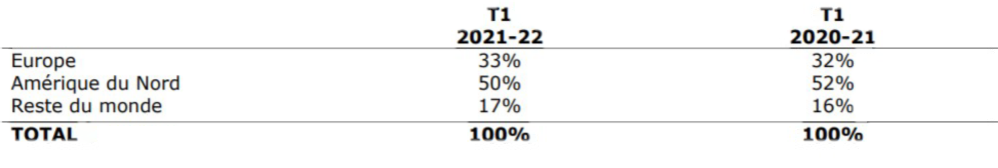

Ubisoft est une Société Anonyme, c’est une société commerciale non financière qui produit et édite des jeux vidéo. Son siège social est situé à Saint-Mandé et son actuel PDG est Yves Guillemot.
Ubisoft est créé en 1986 par les cinq frères Yves, Claude, Gérard, Michel et Christian Guillemot.
Il était alors question de diversifier les activités de l'entreprise familiale qui était spécialisée dans les produits agricoles. Suite à voyage en Angleterre où Michel Guillemot découvre que les jeux y sont vendus moins cher qu’en , les frères décident de créer la société Guillemot International, qui distribue des jeux vidéo France.
Il était alors question de diversifier les activités de l'entreprise familiale qui était spécialisée dans les produits agricoles. Suite à voyage en Angleterre où Michel Guillemot découvre que les jeux y sont vendus moins cher qu’en, les frères décident de créer la société Guillemot International, qui distribue des jeux vidéo France.
Après des études de commerce, Yves Guillemot et ses frères fondent en 1986 Ubisoft (Son nom viendrait du mot ubiquité, qui signifie partout à la fois, ainsi que du mot anglais software) à Carentoir, en Bretagne et distribue des jeux de grandes entreprises comme Electronic Arts mais se lance également dans le développement dans la création de ceux-ci et sort son premier jeu en 1986, qui est succès commercial. Ubisoft connaît alors une croissance importante et crée son premier studio à Paris, à Montreuil et commence aussi à s’implémenter à divers endroits en France (à Montpellier et Annecy) et à l’étranger (un studio en Roumanie et des filiales à Shanghai, Royaumes-Unis, Allemagne, États-Unis, Japon…).
Elle enchaîne ensuite les succès commerciaux comme Rayman et acquiert le studio et la licence de Tom Clancy, avec laquelle est développée le jeu Splinter Cell, qui est également un gros succès commercial. En outre, Ubisoft distribue de nombreuses licences japonaises en Occident.
En 2006, Ubisoft achète différents petits studios (Sunflowers, Reflection Interactive). Cette année est marquée également par la sortie du jeu Lapins Crétins, qui est un énorme phénomène marketing. Deux grosses licences qui font aujourd’hui le renom d’Ubisoft voient ensuite le jour : en 2007 sort le premier Assassin’s Creed et en 2009 Just Dance. En 2009 est également créée une autre filiale, Les Deux Royaumes, éditeur de bandes dessinées, pour adapter le succès des Lapins Crétins et d’Assassin’s Creed. Suite à ça, il est aussi créé en 2010 Ubisoft Motion Picture qui adapte ces licences, pour la première à la télévision et pour la deuxième au cinéma. Aujourd’hui, Ubisoft compte 19 000 employés et est implémenté dans de nombreux pays partout dans le monde.
2. Activités commerciale
Ubisoft est une entreprise qui est spécialisée dans l’édition et le développement de jeux vidéo pour diverses plateformes. Ubisoft est aujourd’hui un des leaders et fait partie des plus grandes entreprises dans ce secteur. Elle a développé 758 jeux de tous types depuis sa création jusqu’en 2020, ce qui permet à l’entreprise de toucher tous les publics grâce à certaines licences (comme Just Dance), même si l’entreprise comme l’industrie du jeu vidéo vise quand même un public composé d’adolescents et de jeunes adultes. Ses licences connues internationalement, créées il y a des dizaines d’années ou plus, continuent de faire encore aujourd’hui à faire des ventes exorbitantes, comme la licence Assassin’s Creed qui a dépassé les 140 millions de ventes en 2019, il est donc clair qu’au vu du succès mondial de cette licence, son savoir-faire en matière de jeu vidéo n’est plus à démontrer. Cette production est assurée grâce à la présence de ses nombreux studios de développement où travaillent 19 000 employés mais aussi grâce aux 20 000 collaborateurs, parmi lesquels on compte 80% d’hommes pour 20% de femmes. Chez Ubisoft, la moyenne d’âge des employés dépasse à peine 35 ans. La présence d’employés âgés de plus de 50 ou 60 ansest quasiment inexistante.
Emplacement des différents sièges d’Ubisoft à travers le monde
En outre, elle produit de nombreux produits dérivés de ses licences, parmi celles-ci, la plus importante étant Les Lapins Crétins, qui est déclinée sous toutes formes comme des peluches, des jouets, des vêtements, elle est aussi utilisée pour des publicités ou d’autres partenariats avec des entreprises, ce qui a généré un revenu colossal à l’entreprise. Avec ces succès importants, Ubisoft créé deux filiales permettant d’exploiter ces licences populaires et appréciées par un large public : Les Deux Royaumes et Ubisoft Motion and Picture. La première adapte par exemple Les Lapins Crétins sous forme de bandes dessinées humoristiques ou encore Assassin’s Creed tandis que la deuxième adapte ces licences sous forme de séries TV ou de films.
Ubisoft étant un leader de son domaine, elle fait face à une large concurrence comme les grandes entreprises Activision Blizzard et aussi Electronic Arts avec qui elle a eu quelques accrochements : EA a essayé de débaucher des développeurs pendant la création d’un jeu chez Ubisoft pour ralentir sa production mais a échoué. Elle a ensuite massivement investi dans les actions chez Ubisoft, qui a donc lutté pour éviter de se faire racheter et pour rester indépendant, mais EA a ensuite revendu ses parts.
3. Fonctionnement et organisation interne
Au sein d’Ubisoft, on retrouve un grand nombre de postes de travail différents qui
permettent par la suite d’arriver aux jeux vidéo disponibles pour le grand public. Tous ces
postes sont regroupés dans des services qui leur sont propres comme par exemple les
services de designer qui vont être chargés d’imaginer et créer l’univers graphique du jeu,
il y a ensuite les équipes qui vont imaginer le jeu en lui-même et ce qu'il s’y passera.
Enfin, les services de programmation qui sont chargés de mettre au point le jeu qui aura
été imaginé plus tôt par les autres services. En plus de ces postes plus connus, il y a un
grand nombre de postes qui n’ont pas en premier rapport de liens avec la programmation
des jeux vidéo comme des programmeurs web, des analyseurs de données, plusieurs
postes économiques comme des comptables. Il y a également des postes liés aux droits,
des chargés de communication, les personnes qui s’occupent de l’image de l’entreprise ou
encore les postes liés au marketing. Les services des différents sièges d’Ubisoft à travers
le monde se spécialisent également dans certaines licences des jeux produits par
l’entreprise comme par exemple le siège de la filière Ubisoft nommé Red Storm en
Caroline du Nord aux Etats-Unis qui est spécialisée dans la franchise des jeux Tom Clancy.
Le travail de l’équipe de programmation est de mettre en place tout ce qui a été
imagé au préalable par les autres services, ils doivent être en mesure de respecter ces
demandes et de le mettre au point sans jamais les avoirs vus ce qui demande également
un grand travail d’imagination. C’est pourquoi le travail est réparti dans plusieurs équipes
et ceux pour chaque service. L’objectif de cette répartition est de créer un esprit de
cohésion et d'entraide dans les équipes de travail afin d’avoir des résultats efficaces et
variés en ayant un sentiment de confort et de travail entre amis. La formation de ces
groupes qui ayant un objectif positif peut parfois engendrer certains problèmes comme
récemment avec des plaintes de harcèlement sexuel qui ont été déposées à l’encontre de
certains cadres de l’entreprise et a évidemment forcé l’entreprise à réagir en sanctionnant
les personnes concernées et les remplacer dans l’entreprise. A l'intérieur de ces groupes
on trouve tout de même une forme de hiérarchie avec un chef de groupe qui va répartir les
tâches et donner les instructions ainsi que la marche à suivre. Ce chef de groupe sera
également celui qui décidera si le travail de son groupe est bien réalisé ou non afin de le
mettre en commun avec les autres groupes. Ubisoft a également mis en place des
horaires de travail identiques pour chaque employé de chaque service afin qu’il n’y ait pas
de services envieux par rapport à d'autres qui aurait donc du mal à travailler ensemble et
engendrerait une sorte de rivalité entre les différents groupes et services. Ubisoft est
également une entreprise qui limite la répétition dans le travail et permet un certain
épanouissement. En effet, travailler dans une grande entreprise de jeux vidéo permet
d’avoir à chaque projet, un nouveau monde qui nous fait face et une approche de travail
variable en fonction du thème du jeu sur lequel l’employé doit travailler. Parmi les
entreprises créatrices de jeux vidéo, Ubisoft fait également partie de celles qui ont une
diversité de production de jeu très varié. Cette diversité permet donc d’éviter de voir une
routine s'installer. Afin de continuer de produire des jeux de qualité comme ils le font
actuellement, Ubisoft recrute beaucoup de personnes mais avec des standards bien
précis. En effet, afin de devenir employé de leur entreprise il est nécessaire d’avoir de
bonne connaissances dans le milieu auquel nous voulons appartenir mais également
d’être en mesure de s’adapter rapidement ainsi que de travailler en équipe.
Il est donc possible d’apprendre le fonctionnement et la façon de créer de
l’entreprise après l'avoir rejoint mais il n’est pas vraiment possible d’apprendre le métier
après avoir rejoint l’entreprise car celle-ci recherche du personnel qualifié et ne peut se
permettre de former ses employés à leur travail.
4. Finances et économie du groupe
Chiffre affaire d'Ubisoft
Depuis la création de l'entreprise, il est indéniable que le chiffre d'affaires à beaucoup augmenté malgré des petites baisses à certains moments comme en 2019-2020 où l’entreprise a vu son chiffre d’affaires fortement baissé à cause d’affaires internes de harcèlement sexuel ce qui a força l’entreprise à prendre des mesure draconiennes .
Pour les années à venir l’objectif d’Ubisoft est d’augmenter leur chiffre d’affaires
grâce à la sortie de nouveaux jeux. Au bout de 20 ans, l'entreprise a réussi à avoir 20
millions de joueurs actifs par mois. Leur objectif est que dans sept ans ils doivent avoir
200 millions de joueurs par mois. Pour cela ils vont faire une de leurs priorités de former
de nouveaux talents pour avoir la main-d'oeuvre nécessaire pour atteindre leur objectif. Un
des autres objectifs d’Ubisoft est de rendre ses locaux plus respectueux de
l'environnement. De l'optimisation de l'utilisation de l'énergie à la création d'espaces verts,
en passant par la favorisation de modes de transport plus écologiques, les équipes locales
du monde entier s'efforcent de soutenir le développement durable dans nos bureaux et
studios. Il vise à utiliser que de l'électricité renouvelable. Ubisoft vend sur plusieurs
marchés différents : marketing, relations presse, vente et du digital.
Au premier trimestre de l’année 2021-2022 Ubisoft à enregistrer une baisse de 17,4% de leur chiffre d’affaires par rapport au premiers trimestre de l’année précédente dû à la sortie de jeux vidéos très populaire qu’ils produisent qui être décalée à cause du manque de travail des développeurs en télétravail et aux échecs commerciaux de certains jeux.

Répartition géographique des revenus du premier trimestre 2021-2022
Avec ce tableau on peut voir que Ubisoft est implanté sur toutes les parties du monde et que la majeure partie est implanté en Europe et Amérique du Nord.